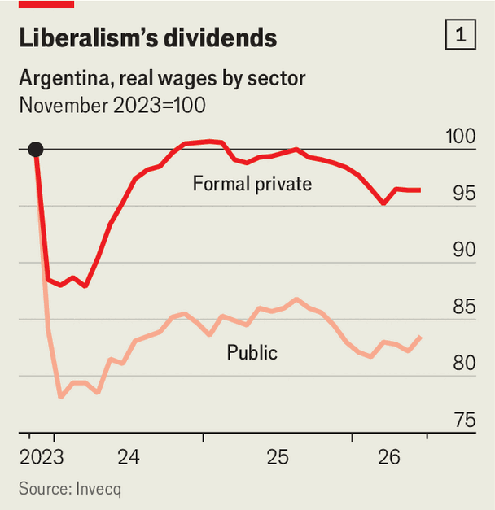

Javier Milei’s liberal experiment is struggling
In an interview with The Economist, Argentina’s president is unyielding

Sep 10th 2026
“My favourite toy,” quips Javier Milei, glancing at the golden chainsaw in his office in the Casa Rosada, the presidential palace. “There’s so much more spending to cut and so many more taxes to lower,” he says, adding that he will really let rip once re-elected next year. If the reforms so far have been “more than everything that was done in the past 100 years in Argentina combined, let me assure you the next reform package will be far deeper.” He promises that Argentina will embrace artificial intelligence like no other country and believes it could help it to “become a leading world power like the United States” in just 20 years. Get ready for Milei “reloaded”, he grins.
Yet this is a delicate moment. After inheriting a dreadful economic mess Mr Milei has managed to reduce inflation and heavily deregulate the economy. Voters rewarded this at last year’s midterm election, but today they tell pollsters that they care much more about job prospects and wages than inflation. Economic growth is spluttering, and there are only 14 months for new policy measures to deliver results before the president faces voters in October next year. With his personal net approval rating deeply negative, there is a risk that a big-spending rival from Argentina’s left-wing Peronist movement, which champions an interventionist state, could capture voters’ imaginations. Mr Milei’s radical experiment, which has inspired free-marketeers worldwide, hangs in the balance. The big question for the coming year is whether doubling down—Milei reloaded—is the way to win re-election.
Mr Milei can boast remarkable successes. Before he took office in December 2023 inflation was running at 13% a month and government spending was out of control, financed by printing money. He took his chainsaw to spending and delivered fiscal surpluses. Inflation has fallen, to about 2% per month. This has helped reduce the share of people living in poverty in Argentina by about a third, to 28%.
Markets are much happier. The government has been paying back foreign debt and this year the central bank has been aggressively buying dollar reserves. This is made easier by booming oil exports. Mr Milei has thinned out Argentina’s thickets of red tape. “We have got rid of 17,000 regulations,” he says. Earlier this year he passed a sweeping labour reform.
Mr Milei remains an unabashed techno-optimist. AI “can only do good, the only harm that can be done is if states get in the way”, he claims. Economic theory “proves” that. He wants to give companies run only by AI full legal rights. “Why should I discriminate against them?” he says—though the draft law that empowers AI does seem to require some human involvement.
His tight alignment with the Trump administration has also delivered. Before the midterms last year, with the spendthrift Peronists polling well, the Argentine peso was under such heavy pressure that the central bank spent over a billion dollars in two days trying to stop it plunging. Mr Trump came to the rescue with a $20bn swap line and direct purchases of pesos by the US Treasury. The currency stabilised, helping Mr Milei’s party turn a probable defeat into a strong win.
And he has shown pragmatism on China, a giant trading partner. Before winning office, Mr Milei branded the Chinese leadership “assassins”. Now he purrs that “working with the Chinese is very agreeable”. This too has paid off. Last month China extended a vital $19bn swap line with the Argentine central bank. Mr Milei says they asked for nothing in exchange.
And yet the president has problems. The economy is on track for a second consecutive year of growth, a rarity in Argentina, but at a slower pace than planned. His government had budgeted for 5% growth this year, but after several months of contraction most analysts expect nearer half that. Growth is concentrated in sectors such as hydrocarbons, mining and agriculture, which are not labour-intensive. Economic activity in industries that are more so, such as manufacturing and construction, is still at least 10% lower than when Mr Milei took office. In part, this is because Mr Milei is exposing Argentina’s protected factories to foreign competition. That is sensible, but the transition is painful. “It’s as if we are financing our own self-destruction,” says Martín Rapallini, the head of the Argentine industrial association, who pleads for a sweeping tax overhaul that Mr Milei has not even attempted.

The result is 230,000 fewer formal private-sector jobs than in 2023, a decline of 3.6%. Mr Milei boasts of cutting 86,000 posts in the public sector. The unemployment rate has only gone up by two percentage points because filings under a tax scheme for small contractors with low incomes have grown sharply. So has informal work. “It still is work,” retorts Mr Milei. Salaries are another worry. In the formal private sector they are still below what they were when Mr Milei took office (see chart 1). In the public sector they are dramatically lower, a fact Mr Milei celebrates.
Many Argentinians are struggling. Nearly 6m people are more than 90 days behind on debt payments. High and volatile interest rates do not help. To fight inflation the central bank has kept the money supply tight and intervened to keep the peso strong. But this hurts growth because it limits lending. It also weighs on manufacturing by making imports cheaper and exports expensive. Mr Milei, focused on inflation, simply denies that his efforts come with any costs at all for growth.

This single-minded focus risks diminishing electoral returns. When Mr Milei took office voters ranked inflation as their top problem by far. It now ranks eighth; lack of jobs and low wages top the list. Voters are also unimpressed by a series of corruption scandals in his government. His net approval rating is nearly minus 30 (see chart 2).
This seems to be irritating Mr Milei. He is furious at Argentine journalists for questioning his economic achievements and writing about alleged corruption. “HUMAN SHIT” is his favourite insult for them. He sometimes attacks the press multiple times a day on social media. When asked about economics in the opening question of The Economist’s interview, his reply included attacks on the “truly shameful” Argentine press and their “blood-curdling” lies. His allies worry his aggression is turning off voters. “I don’t justify it, I don’t do it,” says Patricia Bullrich, a leading senator for his party.
With difficulties at home, the president appears ever more tempted by foreign affairs. Since taking office he has visited the United States around 17 times and Israel thrice, but still has not visited eight of Argentina’s 23 provinces. Yet travel does not seem relaxing for Mr Milei. In neighbouring Brazil, at a campaign rally for Flávio Bolsonaro, a right-wing contender in its presidential election, he referred to the incumbent, Luiz Inácio Lula da Silva, known as Lula, as a “thief” and “convict”. Brazil, Argentina’s biggest trade partner, withdrew its ambassador in response. Mr Milei is unrepentant. “The communist Lula” has “contaminated the whole continent with 21st-century socialism”, he says. On September 3rd in an announcement on national TV he ramped up his rhetoric on Argentina’s claims to the Falklands Islands. That looks like a crude effort to rally support.
Might job worries and sagging polls prompt changes ahead of the elections? “I won’t stop doing what is right just for the sake of an election result,” he says. “If the Argentine people decide to turn their back on the model of freedom because I have remained true to my convictions…well that’s up to the Argentine people.” Mr Milei’s convictions are behind much of his success, but he will be unable to achieve lasting reform without a second term.
He insists that his core policies will soon boost growth and wages. Still, his government has recently made several small changes that seem particularly growth-friendly: allowing interest rates to fall a little, using the state pension fund to help banks to lower mortgage rates, and allowing banks to lend more in dollars rather than pesos. Mr Milei says he is merely “releasing restrictions”. Whatever it is called, if it delivers better wages and more jobs voters would like more of it.
Mr Milei’s saving grace may be his rivals. The leading challenger is probably Axel Kicillof, the Peronist governor of Buenos Aires province. A former finance minister deeply associated with past spending excesses, his net approval rating is as bad as Mr Milei’s. Mr Kicillof insists that right now he is not a candidate, but is still at pains to highlight Mr Milei’s economic woes. Yet his own unorthodox economics terrify markets and scare many voters. He does not accept that the main cause of inflation has been money-printing. Instead, he says, it’s “very complex”.
The Peronists are also divided. Sergio Massa, who lost to Mr Milei last time, may try again. Juan Grabois, a firebrand congressman, may run, too. He promises social justice financed by dramatically higher taxes on the rich. “You don’t have to fear Axel [Kicillof],” he chuckles, “you have to fear me, you have to fear Myriam Bregman.” She is a high-profile Trotskyite, to the left of even the Peronists. Strikingly, her approval rating is much better than Mr Kicillof’s and Mr Milei’s.
With the main contenders so disliked, many others are also eyeing a run. Hernán Lacunza, a centre-right former finance minister, offers Milei-style economics without the swearing. Provincial governors and Pentecostal television pastors are sniffing around. Mr Milei is still the favourite. But while the economy splutters, it looks uncomfortably tight. ■